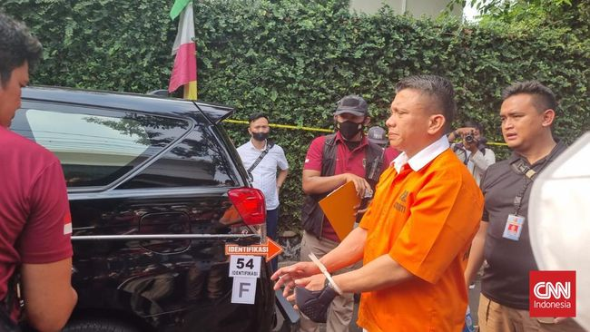

Ferdy Sambo Klaim Tak Ikut Tembak Brigadir J, Penasihat Kapolri: Masih Ada Upaya Perlawanan
15/09/2022
Penasihat Ahli Kapolri Bidang Keamanan dan Politik Muradi menyebutkan, masih ada upaya perlawanan dari Irjen Ferdy Sambo dalam pengusutan kasus dugaan pembunuhan berencana Nofriansyah Yosua Hutabarat atau Brigadir J.
Ini terlihat dari pengakuan Sambo yang tidak ikut menembak Brigadir J. Sementara, dalam keterangannya, Richard Eliezer atau Bharada E menyatakan bahwa Sambo ikut menembak.
Muradi mengatakan, Polri telah mengantongi sejumlah barang bukti dalam kasus ini. Polisi tinggal melakukan pencocokan dari keterangan para saksi.
Dia pun mengajak masyarakat tetap mengawal kasus ini hingga hukuman terhadap Ferdy Sambo dan para tersangka lainnya dijatuhkan.
Jangan sampai publik gentar karena menaruh simpati pada anak-anak Ferdy Sambo, juga isu kekerasan seksual yang belakangan diklaim istri Sambo, Putri Candrawathi.
"Publik tetap harus mengawal. Kalau tidak, ini 'masuk angin'," ujarnya.
Muradi memprediksi, Sambo bakal dihukum minimal 20 tahun penjara dalam kasus ini.
Bahkan, menurutnya, tak tertutup kemungkinan mantan Kepala Divisi Profesi dan Keamanan (Kadiv Propam) Polri itu dihukum seumur hidup atau hukuman mati karena dijerat pasal berlapis soal pembunuhan berencana sekaligus obstruction of justice atau menghalangi penyidikan.
Selain itu, dia memprediksi, para polisi yang membantu menghilangkan barang bukti di tempat penembakan akan terkena imbasnya. Minimal, kata Muradi, 7-8 orang dipecat dari Polri.
Sementara, tujuh polisi yang menjadi tersangka obstruction of justice kasus Brigadir J diperkirakan dijatuhi hukuman 5-20 tahun penjara, bergantung dari perannya.
Melihat perkembangan pengusutan kasus, Muradi optimistis para tersangka akan dijatuhi hukuman maksimal.
"Saya melihatnya dalam konteks ini akan sesuai dengan apa yang menjadi ganjaran dari pelaku pembunuhan," ucapnya.
Muradi berharap, proses hukum terhadap para personel Polri ini, termasuk para perwira, dapat menimbulkan efek jera.
"Sebelumnya ada banyak kasus korupsi segala macam itu kan lebih ke extraordinary crime. Ini kan kriminal biasa yang memang dilakukan oleh petinggi Polri," tutur Ketua Pusat Studi Politik dan Keamanan (PSPK) Universitas Padjdjaran ini.
Sebagaimana diketahui, polisi telah menetapkan lima tersangka kasus pembunuhan berencana terhadap Brigadir J.
Kelimanya yakni Irjen Ferdy Sambo, Putri Candrawathi, Richard Eliezer atau Bharada E, Ricky Rizal atau Bripka RR, dan Kuat Ma'ruf.
Pihak kepolisian sebelumnya telah menyatakan, tak ada insiden baku tembak antara Bharada E dengan Brigadir J di rumah Ferdy Sambo sebagaimana narasi yang beredar di awal.
Peristiwa sebenarnya, Sambo memerintahkan Eliezer untuk menembak Yosua di rumah dinasnya di Duren Tiga, Jakarta Selatan, Jumat (8/7/2022).
Setelahnya, jenderal bintang dua Polri itu menembakkan pistol milik Brigadir J ke dinding-dinding rumah supaya seolah terjadi tembak-menembak.
Menurut pengakuan Bharada E, setelah dirinya menembak, Sambo ikut melepaskan tembakan ke Brigadir J yang sudah terkapar bersimbah darah.
Sementara, Sambo membantah hal tersebut. Dia mengaku tak menembak Yosua.